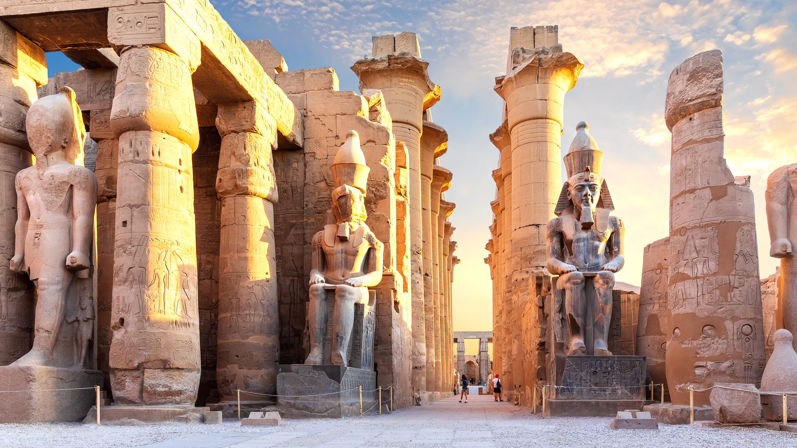

Luxor is a city in southern Egypt on the banks of the Nile River. It is built on the site of ancient Thebes, which was the capital of Egypt during the time of the pharaohs.
Many people call Luxor the world's greatest open-air museum because it is full of temples, tombs, and statues that are thousands of years old.
Visit the temples early in the morning to avoid the heat and the crowds.
Wear light clothes, a hat, and comfortable shoes, and bring water.
Agree on the price of taxis and boat rides before you start.
| Fact | Details |
|---|---|
| Best Season | October to April (cooler weather) |
| Currency | Egyptian Pound (EGP) |
| Language | Arabic (English is spoken in tourist areas) |
| Average Cost | Budget-friendly (check current prices before you go) |
Visit Karnak Temple in the morning, then enjoy Luxor Temple at sunset when it is lit up.
Explore the Valley of the Kings and the Temple of Hatshepsut, and stop to see the Colossi of Memnon.
Take a felucca ride on the river, then walk through the local market to buy souvenirs.